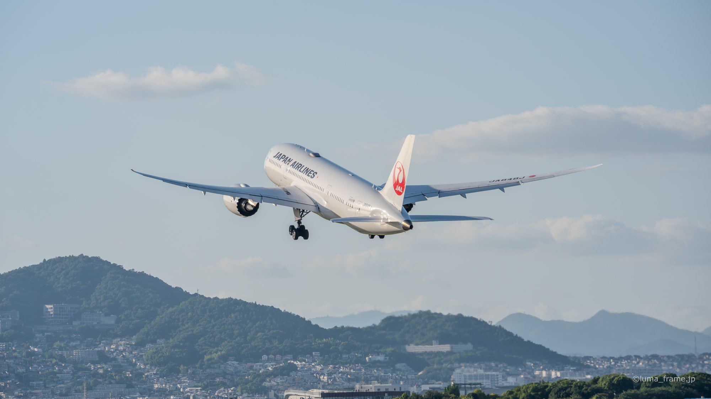
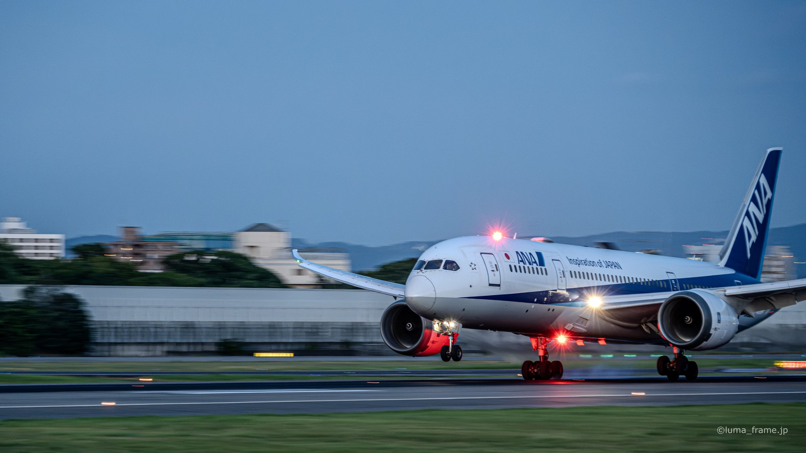
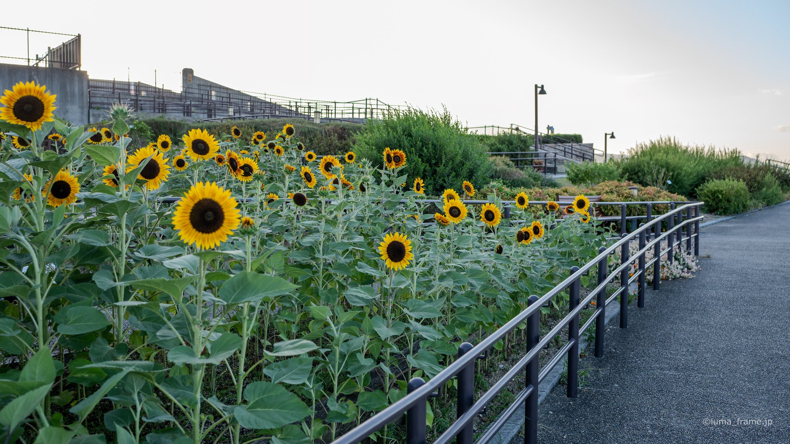
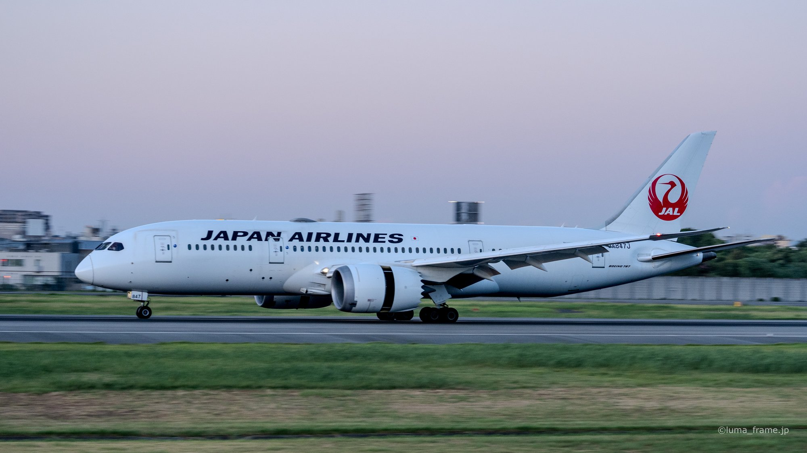
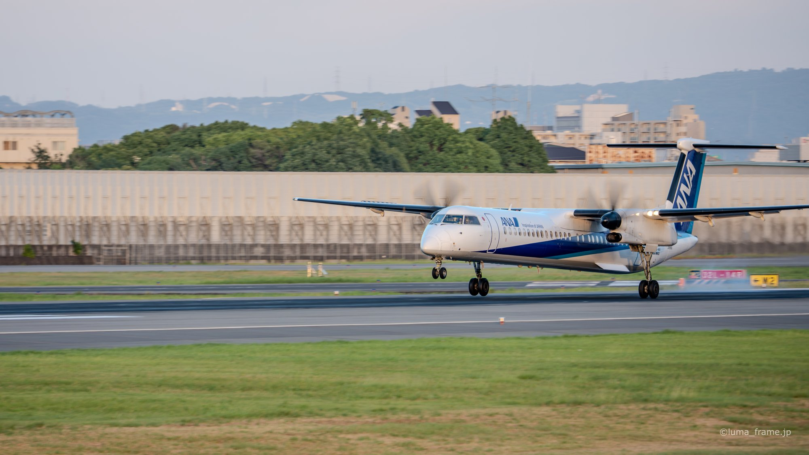
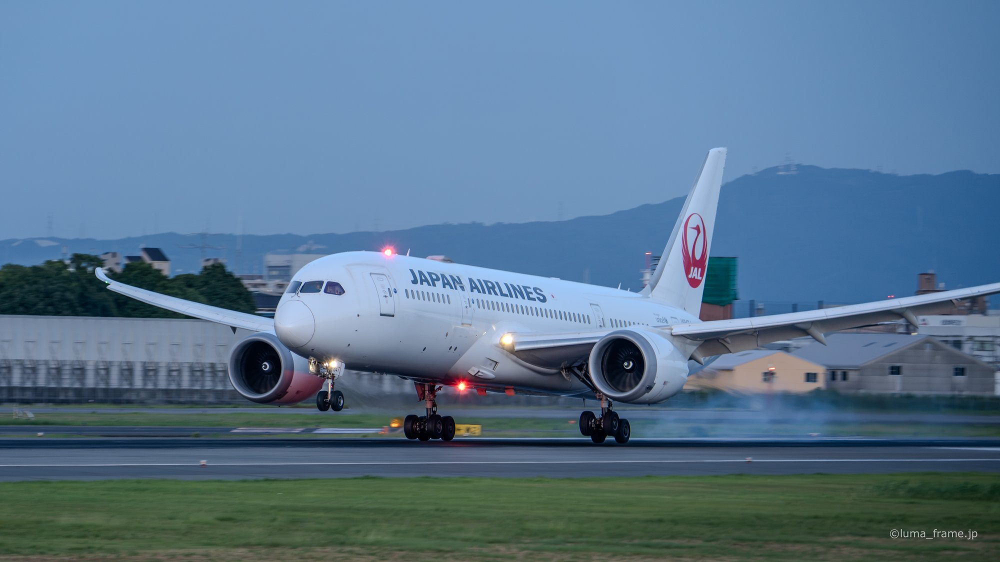

Sho's note
Itami Skypark
A free park that runs about 1.2 km along the west side of Itami's runway. The Wing Hill deck is 61 metres wide, the same span as a Boeing 777 wing.
Planes low over a riverbank at Itami, an airport island in the bay at Kansai, and a rooftop deck by the sea at Kobe. Here's what I'd show you.
One price per private group of up to six, quoted in USD.
One airport of your choice: Itami, Kansai or Kobe.
Free quoteTwo airports, or all three if time allows, linked by limousine bus, ferry and train.
Free quote
I spent nine years in Brisbane, from junior high to the end of university, and I guide in English or Japanese. I've photographed planes since 2009, and I've been to all three of these airports myself.
A free park that runs about 1.2 km along the west side of Itami's runway. The Wing Hill deck is 61 metres wide, the same span as a Boeing 777 wing.
A viewing building of its own on the airport island, with the Sky Museum inside. A free shuttle bus runs to it from Terminal 1.
The runway and the sea to the south, Port Island and the Rokko mountains to the north. The sun sets to the west, and the runway lights come on after dark.
At the south end of Itami's runway, landing planes pass low over the Senri River bank in Toyonaka. It's about 2 km on foot from Hankyu Sone Station. The wind decides which end of the runway the planes land from, so the view changes from day to day.
The three airports are linked. A limousine bus runs between Kansai Airport and Itami in about 1 hour 10 minutes (2,200 yen), and the Bay Shuttle ferry crosses from Kansai Airport to Kobe Airport for 1,880 yen (adult, one way).






Itami, if you'd like planes close overhead. Kansai or Kobe, if you'd like the sea in your photos. Tell me what you want to see and I'll suggest one.
On a full day we can usually do two, and all three if time allows. I'll plan the order around the transport links.
Tripods are fine at Kobe as long as they don't block aisles, benches, stairs or spots along the fence.
Tell me your date, how many of you there are and anything you can't eat. I'll send back a route and a free quote.
Ask for a free quote →